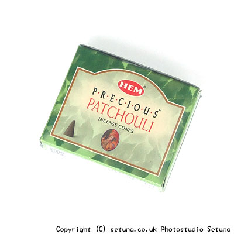

そのままだと本当に「虫除け！」という感じの匂いと云うか、ちょっとクセのあるキツい匂いがします。
パチュリー自体が虫除けや消毒・消臭の効果のあるハーブなので当たり前なんでしょうが(笑
私はコーン型の物を服を入れるタンスの引き出し全部に１〜２個入れてあります。
火を点けても香り自体はあまり変化がないです。
ただ、独特の香りのせいか空気の感じが激変しますね。
もういかにも「消毒してます〜〜、きれいにしてます〜〜」みたいな・・・
焚き終わりも同様の香りが長く続き、少しづつ薄れていきます。
結構きつめの香りなので、オーロビンド香のような優しい香りの物とブレンディングした方が良いと思います。
タンス使用の場合、上着の場合に限り着用の１時間位前には出して部屋に吊っておく事をお勧めします。
下着やボトムなどはいい香りに感じますが、顔に近いとちょっとキツいかもしれません。
羽虫・ダニ・ノミ・シラミ等の害虫除けとして効果を発揮します。
